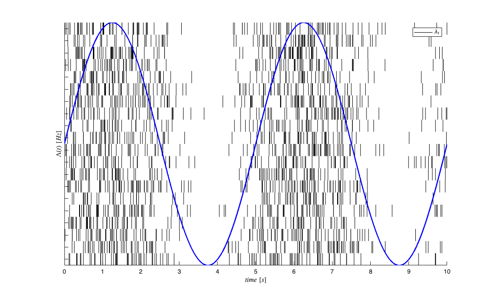
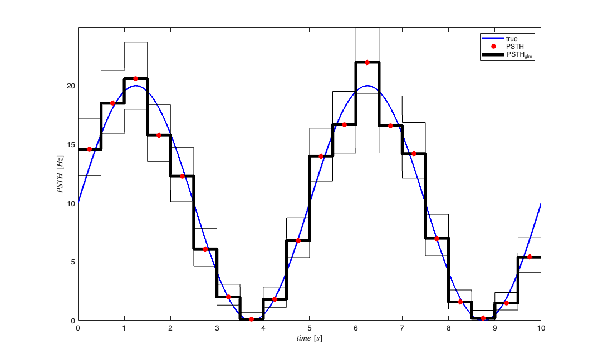

PSTH Estimation
We illustrate two ways to estimate a peristimulus time histogram using the nSTAT toolbox. One technique is the standard binning in time, averaging across trials, and dividing by the binwidth to estimate the spike rate and the other is based on the method presented in "Analysis of Between-Trial and Within-Trial Neural Spiking Dynamics" by Czanner et al in J Neurophysiology 2008.
Contents
Generate a known Conditional Intensity Function
We generated a known conditional intensity function (rate function) and generate distinct realizations of point processes consistent with this rate function. We use the method of thinning to simulate a point process.
close all; delta = 0.001; Tmax = 10; time = 0:delta:Tmax; f=.2; lambdaData = 10*sin(2*pi*f*time)+10; %lambda >=0 lambda = Covariate(time,lambdaData, '\Lambda(t)','time','s','Hz',{'\lambda_{1}'},{{' ''b'', ''LineWidth'' ,2'}}); numRealizations = 20; % Use 20 realization so that lamba and raster plot are the same size spikeColl = CIF.simulateCIFByThinningFromLambda(lambda,numRealizations); spikeColl.plot; set(gca,'ytickLabel',[]); lambda.plot;

Estimate the PSTH with 500ms windows
figure; binsize = .5; %500ms window psth = spikeColl.psth(binsize); psthGLM = spikeColl.psthGLM(binsize); trueRate = lambda; %rate*delta = expected number of arrivals per bin h1=trueRate.plot; h3=psthGLM.plot([],{{' ''k'',''Linewidth'',4'}}); h2=psth.plot([],{{' ''rx'',''Linewidth'',4'}}); legend off; legend([h1(1) h2(1) h3(1)],'true','PSTH','PSTH_{glm}'); % Scalar summaries for automated parity checks. psth_mean_hz = mean(psth.data); psth_glm_mean_hz = mean(psthGLM.data); lambda_mean_hz = mean(lambda.data); parity = struct(); parity.psth_mean_hz = psth_mean_hz; parity.psth_glm_mean_hz = psth_glm_mean_hz; parity.lambda_mean_hz = lambda_mean_hz; % Because currently the psthGLM estimated the psth coefficients in each bin % for each realization, we want the show the mean and standard error of the % cofficient in each bin. We make the upper and lower confidence bounds % equal to 1/sqrt(numRealization)=1/sqrt(psth.dimension) to view the % standard error instead of the standard deviation
Running in batch mode: neurons with same name are fit simultaneously Analyzing Configuration #1: Neuron #1

Note the mean of the PSTH estimated via the GLM model and the PSTH computed via standard methods agree precisely. The benefit of the GLM estimated PSTH is the presence of confidence bounds on the estimate. Both the standard and GLM PSTH are in close agreement with the "true" underlying rate function (conditional intensity function) used in this simulated example. Both the PSTH and PSTHGLM code could be updated in the future to allow for variable bin sizes (e.g. in the vein of Baysian Adaptive Regression Splines by Wallstrom, Leibner and Kass). Alternatively, porting of BARS to Matlab may allow for it to be easily integrated into the nSTAT toolbox.